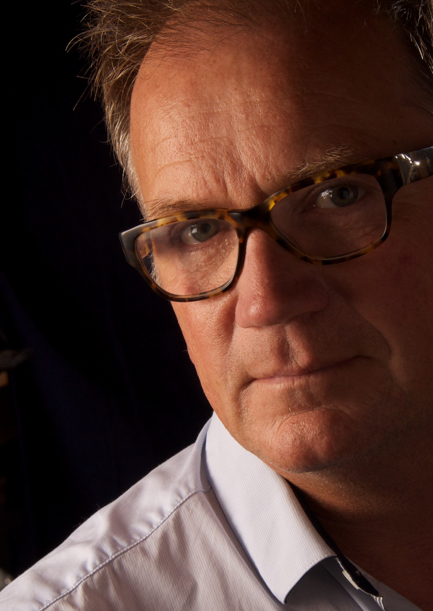

Vanaf 1959 is Huiskamp een gerenommeerde naam op het gebied van restauratie en onderhoud van vastgoed zowel commercieel als particulier.
Ons uitgangspunt is, samen met u als opdrachtgever uw vastgoed op een verantwoorde en professionele wijze te beschermen en te verfraaien. Zo zal uw bezit waardig de tijd doorstaan. Wij geven advies over de technische mogelijkheden, systemen en kleuren, en kunnen voor u een meerjaren onderhoudsplan opstellen.
U heeft vanaf het eerste contact tot en met de oplevering te maken met één contactpersoon. Door heldere en directe communicatie kunnen uw opmerkingen en wensen direct opvolging krijgen.
Wij ondernemen maatschappelijk verantwoord en respecteren het milieu, de gezondheid en de veiligheid van onze vakbekwame medewerkers. Onze energieleverancier levert 100% CO2 gecompenseerd. Ons bedrijfpand telt 29 zonnepanelen en een deel van ons wagenpark is 100% elektrisch.
